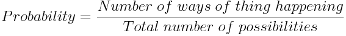
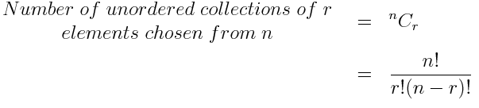

What's the chance of winning the national lottery?
In the UK there is a national lottery (everything's nationalised here). You choose 6 numbers from the numbers 1 to 49, and pay £1. A machine picks 6 ping pong ball from a rotating drum containing 49 numbered balls. I think the drum spins round to inject a bit of drama into the proceedings. If your numbers are drawn you win 5 million quid.
How likely are you to win? Well, in this type of probability problem everything is known in advance, so it's "simply" a matter of counting up the possibilities.

The top line of equation, "how many ways are there of drawing my 6 balls from the machine", is easy - there is only 1 way. The bottom line of the equation, "how many ways are there of choosing any 6 balls from 49", requires some thought.
Lets start with a simpler problem - "how many ways are there of lining up the 49 balls in a row?" Well imagine picking the balls one by one from the machine and laying them out in a line. For the first ball the are 49 choices, for the second there are 48, for the third there are 47, all the way down. So the number of ways of doing this is 49x48x47......3x2x1. In general:

The n! is called n factorial. It's just a mathematical shorthand for the big pile of multiplications you have to do. Factorials get big very quickly:
| 1! | 1 |
| 2! | 2 |
| 3! | 6 |
| 4! | 24 |
| 5! | 120 |
| 6! | 720 |
| 10! | 3628800 |
| 49! | 608281864034267560872252163321295376887552831379210240000000000 |
A similar problem, closer to what we want is "how many ways can you sequentially pick 6 balls from 49?" Its quite like the ordering problem. You have 49 choices for the first, 48 for the second, but you stop when you have made 6 picks. So the answer is 49x48x47x46x45x44. If you look at this answer you can see it equals 49!/43! = 49!/(49-6)! The mathematical name for this is the number of permutations, and has the general formula:
So now we can answer the question "how many ways are there of choosing 6 balls from 49". The thing about the permutation formula is that the order you pick the objects matters. In the lottery that's not the case, you don't care what order the balls are chosen in, only that they're picked. So the answer is to take the number of permutations and divide it by the number of ways of ordering the 6 balls that were chosen, that is divide by 6!. So the answer is 49!/43!6! = 13983816.
In general choosing r elements from n where order doesn't matter, is called the number of combinations and has the general formula:

So to return to the original question, "what the probability of winning the national lottery". The answer is number ways of choosing your numbers, which is 1, divided by the total number of ways of choosing 6 balls from 49, which is 13,983,816. Or roughly one in 14 million. Not very likely really.